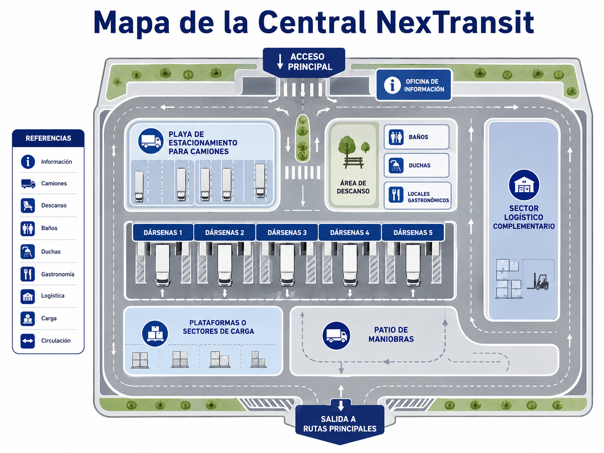

Acceso
Ingreso y control
Ingresá por el acceso principal. Allí se realiza el control inicial y la derivación hacia estacionamiento, servicios o dársenas.
Para facilitar la lectura desde el celular, la central se resume en zonas principales según el recorrido habitual del conductor.
Acceso
Ingresá por el acceso principal. Allí se realiza el control inicial y la derivación hacia estacionamiento, servicios o dársenas.
Información
Consultá sector asignado, dársena, documentación y estado del recorrido.
Espera
Si tenés espera previa, dirigite a la playa de estacionamiento para camiones.
Servicios
Baños, duchas, locales gastronómicos y área de descanso se encuentran agrupados cerca del sector central.
Operación
Las dársenas 1 a 5 y las plataformas de carga se utilizan para carga, descarga y coordinación operativa.
Operación
Usá el patio de maniobras para circulación interna segura antes de entrar o salir de dársenas.
Salida
Antes de salir, verificá recorrido, documentación y recomendación operativa.
El siguiente plano visual representa la distribución física de NexTransit, donde los camiones ingresan, estacionan, descansan, cargan, descargan y salen hacia rutas principales.

Entradas, salidas y conexiones con rutas.
Baños, duchas, información y gastronomía.
Dársenas, plataformas, logística y maniobras.
Áreas de pausa y espera para conductores.
Playas de aparcamiento para camiones.
Incluye el acceso principal, la salida a rutas principales y el patio de maniobras.
Incluye dársenas 1 a 5, plataformas o sectores de carga y sector logístico complementario.
Incluye baños, duchas, oficina de información, área de descanso y locales gastronómicos.